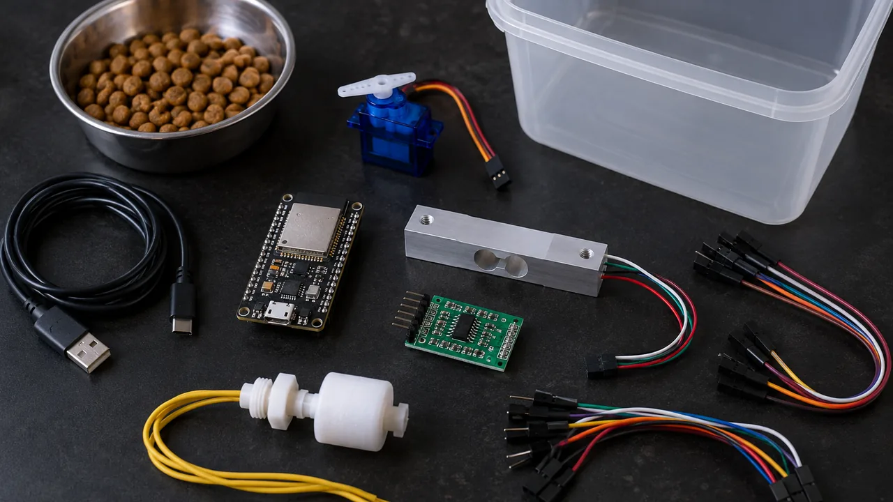
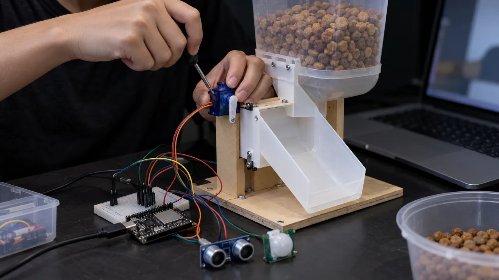
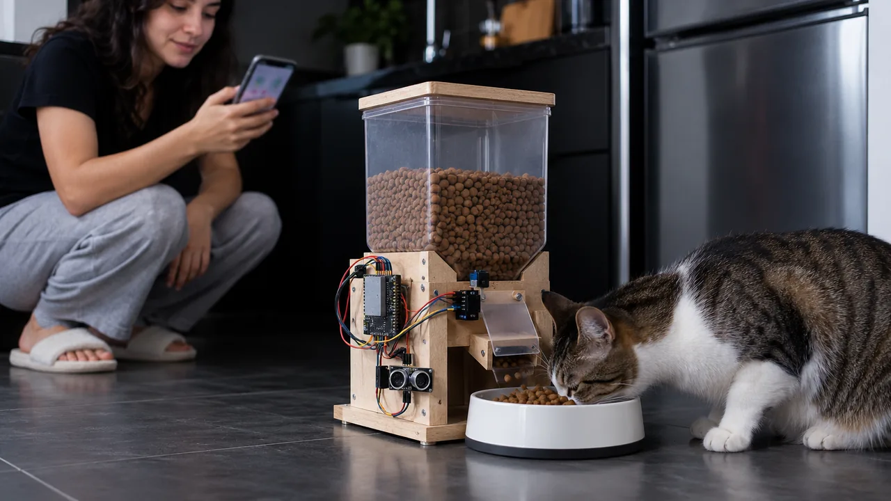

Solução 1 · Pet automático
Solução 1 · Pet automático
Comedouro que serve na hora e avisa se o pet não comeu
Um servo abre a portinhola da ração nos horários que você escolhe. Uma balança embaixo do pote mede quanto o pet comeu, e uma boia avisa quando a água acaba. Serve para quem trabalha fora, viaja no feriado ou cuida de vários animais.
Como funciona
Serve, pesa, confere, avisa
O ESP32 pega a hora certa da internet. Na hora da refeição, gira o servo, que abre a portinhola de um reservatório (uma garrafa PET de boca para baixo serve) e solta a ração no pote. O pote fica em cima de uma célula de carga, uma barrinha de metal que entorta um pouco com o peso; o módulo HX711 transforma essa deformação em gramas. Três horas depois, o ESP32 compara o peso: se quase nada sumiu, marca "não comeu".
Peças
Lista de compras

| Peça | Para que serve | Preço aprox. |
|---|---|---|
| ESP32 DevKit V1 (30 pinos) | O cérebro, com Wi-Fi e relógio pela internet | R$ 35–45 |
| Servo MG90S (engrenagem de metal) | Abre e fecha a portinhola. O SG90, de plástico, quebra com ração dura | R$ 18–25 |
| Célula de carga 1 kg + módulo HX711 | A balança embaixo do pote | R$ 18–28 |
| Sensor de nível tipo boia (chave boia) | Avisa quando a água do bebedouro baixa | R$ 12–18 |
| Capacitor 470 µF 16 V | Segura o pico de energia do servo | R$ 2–3 |
| Fonte 5 V 2 A com cabo USB | Alimenta o ESP32 e o servo | R$ 10–20 |
| Protoboard, jumpers | Ligações sem solda | R$ 12–20 |
| Comedouro: garrafa PET, pote, MDF ou caixa, parafusos | Reservatório, portinhola e base da balança | R$ 15–40 |
| Total | R$ 120–200 |
Preços aproximados de loja online brasileira em outubro de 2026, a conferir antes de comprar. A câmera opcional (ESP32-CAM, seção de IA) não entra nesse total.
Ligação
O circuito, pino por pino
| Componente | Pino do componente | Liga no ESP32 |
|---|---|---|
| HX711 | VCC · GND · DT · SCK | 3V3 · GND · GPIO 16 · GPIO 17 |
| Servo MG90S | + (vermelho) · − (marrom) · sinal (laranja) | VIN (5 V do USB) · GND · GPIO 18 |
| Boia | fio 1 · fio 2 (tanto faz a ordem) | GPIO 27 · GND |
| Célula de carga | vermelho · preto · branco · verde | No HX711: E+ · E− · A− · A+ |
INPUT_PULLUP). Com a boia fechada, o pino lê LOW; aberta, lê HIGH. Os pinos 34 a 39 não têm esse resistor, por isso a boia não vai neles.Passo a passo
Da garrafa PET ao primeiro aviso

- Prepare a Arduino IDE. Instale a Arduino IDE 2 e, em Gerenciador de Placas, "esp32" (Espressif). Em Bibliotecas, instale "ESP32Servo" (Kevin Harrington) e "HX711" (Bogdan Necula).
- Monte a balança. Parafuse a célula de carga entre duas tábuas: uma ponta presa na base, a outra presa no prato onde fica o pote. A seta gravada na célula aponta para baixo, no sentido do peso.
- Ligue o HX711 e calibre. Grave o código com
FATOR = 1.0e o pote vazio no prato. No Monitor Serial (115200) aparece um número grande. Ponha um objeto de peso conhecido (pese na balança de cozinha, por exemplo 200 g) e anote o número.FATOR = número ÷ gramas. Troque no código e grave de novo. - Monte a portinhola. Corte uma lâmina de plástico ou MDF que tampe a boca da garrafa e prenda no braço do servo. Em 0° fica fechada, em 90° abre.
- Ligue o servo com o capacitor e teste: o servo tem que girar só na hora da refeição. Para testar sem esperar, mude um horário de
REFEICOESpara a hora atual. - Ajuste a porção. Encha o reservatório e veja quantos gramas caem em cada abertura. Aumente ou diminua
ABRE_MSaté chegar na porção que o veterinário indicou. - Instale a boia no bebedouro, na altura mínima de água, e confira no painel: água baixa aparece como "BAIXA".
- Abra o painel. O Monitor Serial mostra o IP (ex.: 192.168.0.50). Digite no navegador do celular, na mesma rede Wi-Fi.
Código
Arduino IDE para ESP32
Troque o nome e a senha da rede, coloque o seu FATOR e os horários. Ligue o ESP32 sempre com o pote vazio no prato: ele zera a balança ao ligar.
// Pet automático — ESP32, Arduino IDE
// Bibliotecas: "ESP32Servo" (Kevin
// Harrington) e "HX711" (Bogdan Necula)
#include <WiFi.h>
#include <WebServer.h>
#include <ESP32Servo.h>
#include <HX711.h>
#include <time.h>
const char* REDE = "NOME_DA_REDE";
const char* SENHA = "SENHA_DA_REDE";
// GPIO 18: sinal do servo (portinhola)
const int PINO_SERVO = 18;
// GPIO 16: DT do HX711
const int PINO_DT = 16;
// GPIO 17: SCK do HX711
const int PINO_SCK = 17;
// GPIO 27: boia (outro fio no GND)
const int PINO_BOIA = 27;
// Calibração: comece com 1.0
// FATOR = número lido / gramas do peso
float FATOR = 1.0;
// horas das refeições (horário de Brasília)
const int N_REF = 2;
const int REFEICOES[N_REF] = {7, 18};
// tempo com a portinhola aberta
const int ABRE_MS = 600;
// confere 3 h depois de servir
const unsigned long CONFERE_MS =
3UL * 3600 * 1000;
// sumiu menos que isso = "não comeu"
const float MINIMO_G = 10;
Servo porta;
HX711 balanca;
WebServer servidor(80);
float peso = 0, servido = 0;
float comidoHoje = 0;
bool jaServiu[N_REF];
bool aguaOk = true, naoComeu = false;
bool conferir = false;
unsigned long horaServiu = 0;
unsigned long ultimaLeitura = 0;
int diaAtual = -1, refeicoes = 0;
float lerPeso() {
if (!balanca.is_ready()) return peso;
// média de 5 leituras
return balanca.get_units(5);
}
void servir() {
// abre, espera, fecha
porta.write(90);
delay(ABRE_MS);
porta.write(0);
// ração assenta no pote
delay(2000);
servido = lerPeso();
horaServiu = millis();
conferir = true;
naoComeu = false;
refeicoes++;
}
// /dados: JSON para o painel e para a IA
void dados() {
String j = "{\"peso\":" + String(peso, 0);
j += ",\"servido\":" + String(servido, 0);
j += ",\"comido_hoje\":" +
String(comidoHoje, 0);
j += ",\"refeicoes\":" + String(refeicoes);
j += ",\"agua_ok\":";
j += aguaOk ? "true" : "false";
j += ",\"nao_comeu\":";
j += naoComeu ? "true" : "false";
j += "}";
servidor.send(200, "application/json", j);
}
// /: página que abre no celular (5 em 5 s)
void painel() {
String h = "<meta name=viewport "
"content='width=device-width'>"
"<meta http-equiv=refresh content=5>";
h += "<h2>Comedouro</h2><p>No pote: ";
h += String(peso, 0) + " g";
h += "<br>Comeu hoje: ";
h += String(comidoHoje, 0) + " g";
h += "<br>Água: ";
h += aguaOk ? "ok" : "BAIXA";
if (naoComeu) h += "<br><b>NÃO COMEU</b>";
h += "</p>";
servidor.send(200, "text/html", h);
}
void setup() {
Serial.begin(115200);
pinMode(PINO_BOIA, INPUT_PULLUP);
porta.setPeriodHertz(50);
porta.attach(PINO_SERVO, 500, 2400);
// começa fechada
porta.write(0);
balanca.begin(PINO_DT, PINO_SCK);
balanca.set_scale(FATOR);
// zera com o pote vazio no prato
balanca.tare();
WiFi.begin(REDE, SENHA);
while (WiFi.status() != WL_CONNECTED) {
delay(500);
Serial.print(".");
}
// relógio pela internet, fuso -3 h
configTime(-3 * 3600, 0, "pool.ntp.org");
Serial.print("\nPainel em http://");
Serial.println(WiFi.localIP());
servidor.on("/", painel);
servidor.on("/dados", dados);
servidor.begin();
}
void loop() {
servidor.handleClient();
if (millis() - ultimaLeitura < 2000) return;
ultimaLeitura = millis();
peso = lerPeso();
// boia fechada (LOW) = água no nível
aguaOk = digitalRead(PINO_BOIA) == LOW;
Serial.printf("peso=%.1f agua=%d\n",
peso, aguaOk);
struct tm t;
if (!getLocalTime(&t, 10)) return;
// virou o dia: zera a contagem
if (t.tm_yday != diaAtual) {
diaAtual = t.tm_yday;
comidoHoje = 0;
refeicoes = 0;
for (int i = 0; i < N_REF; i++)
jaServiu[i] = false;
}
for (int i = 0; i < N_REF; i++) {
if (t.tm_hour == REFEICOES[i] &&
!jaServiu[i]) {
jaServiu[i] = true;
servir();
}
}
bool passou =
millis() - horaServiu > CONFERE_MS;
if (conferir && passou) {
conferir = false;
float comeu = servido - peso;
if (comeu > 0) comidoHoje += comeu;
naoComeu = comeu < MINIMO_G;
}
}A camada de IA
O que a IA faz neste projeto
Aviso de "não comeu"
A regra simples já está no código. Na versão 2, guarde os gramas de cada dia e peça à IA para comparar com a média: "hoje ele comeu 40% menos que na semana". Mudança de apetite é motivo para ir ao veterinário.
Resumo do dia
Um script no computador lê os dados do ESP32 e pede a um modelo de IA um resumo curto para mandar ao dono que está viajando.
Câmera que reconhece o pet
Opcional: uma ESP32-CAM tira foto quando o peso muda. Um modelo de visão diz se foi o gato, o cachorro ou nenhum animal. Com dois pets, você descobre quem comeu.
Script de resumo, em Python, rodando no computador na mesma rede:
# resumo.py — roda no computador,
# na mesma rede do ESP32
import json, urllib.request
# troque pelo IP do seu ESP32
URL = "http://192.168.0.50/dados"
dados = json.load(urllib.request.urlopen(URL))
prompt = (
"Você ajuda a cuidar de um gato. "
"Dados do comedouro hoje: "
+ json.dumps(dados) + ". "
"peso = gramas no pote agora, "
"servido = gramas logo após servir, "
"comido_hoje = gramas comidas no dia, "
"agua_ok = bebedouro com água. "
"Escreva em português, em até 3 frases, "
"um resumo para o dono que está viajando."
)
print(prompt)
# Mande o prompt ao modelo que você usa:
# - cole no chat do serviço de IA; ou
# - use a biblioteca oficial do serviço,
# com a SUA chave numa variável de
# ambiente (nunca escrita no código); ou
# - rode um modelo local no PC, sem chave.Teste e melhore
Confira antes de deixar o pet com ele
- Com o pote vazio, o painel marca perto de 0 g; com o peso conhecido, marca o peso certo (erro de até 5 g).
- O servo abre e fecha só no horário, e a portinhola fecha de verdade (sem ração escorrendo).
- Cada abertura solta sempre mais ou menos a mesma porção. Teste 5 vezes e anote.
- Tirando a ração do pote com a mão, o painel não mostra "NÃO COMEU" na conferência.
- Tirando a água, aparece "BAIXA" em até 2 segundos.
- Uma semana inteira com você em casa antes do primeiro feriado.
| Erro comum | Causa provável | Como resolver |
|---|---|---|
| Peso negativo ou que sobe sozinho | Balança zerada com o pote cheio, ou célula montada ao contrário | Ligue com o pote vazio; confira a seta da célula e os parafusos |
| Peso sempre 0 | DT e SCK trocados, ou fio da célula solto | DT no GPIO 16, SCK no GPIO 17; confira as 4 cores no HX711 |
| ESP32 reinicia quando o servo gira | Pico de energia do servo | Capacitor de 470 µF no servo e fonte de 2 A |
| Ração trava na portinhola | Grão grande, boca estreita ou abertura curta | Boca mais larga, rampa inclinada, aumente ABRE_MS |
| Serve na hora errada | Fuso horário ou ESP32 sem internet ao ligar | Confira o -3 * 3600; o relógio só funciona depois de pegar a hora da internet |
| Água "BAIXA" com o pote cheio | Boia montada ao contrário | Vire a boia ou troque LOW por HIGH na linha da boia |
Caderno de testes. Cada vez que mudar alguma coisa, anote numa linha. A tabela da porção certa para cada ração vira argumento de venda.
| Data | Versão | O que mudou | Resultado |
|---|---|---|---|
| 20/10 | v1 | Abertura de 0,6 s | Caíram 15 g, pouco para um gato adulto |
| 21/10 | v2 | Abertura de 1,2 s e rampa no funil | Caíram de 38 g a 44 g em 5 testes |
| … | v3 | Comparar o dia com a média da semana | Anote aqui |
Segurança
Pet, peça que mexe e fio
Ficha de negócio
Como vender o pet automático

| Quem compra | Dono de pet que trabalha fora ou viaja no feriado, pet shop que revende com a marca da loja, hotelzinho e creche de pet (vários comedouros num painel só) |
| Custo do kit | R$ 120–200 (lista acima, a conferir) |
| Preço sugerido | R$ 300–450 o comedouro montado, calibrado e testado (sugestão) |
| Mão de obra | 1 hora para instalar, calibrar a porção com a ração do cliente, programar os horários e ensinar o painel |
| Assinatura opcional | R$ 10–20 por mês: alertas, resumo da semana e ajuste da porção (sugestão) |
| Argumento de economia | Mostre o número: custo da ração por dia = gramas comidas × preço do quilo ÷ 1000. Compare com o preço de uma visita de cuidador no feriado (pergunte o valor na sua cidade) |
Para ir além
Próximos passos
Para entender como um modelo reconhece o pet numa foto, siga o curso Visão e ação (VLA). Para controlar servos e sensores com mais precisão, veja Robótica. Todos os cursos são abertos e gratuitos no INEMA.CLUB.